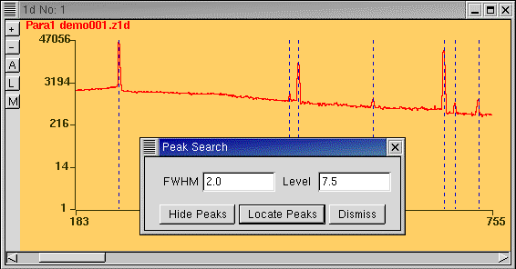

Peak Search locates peaks in the spectrum. Before starting Peak Search, obtain an idea of the FWHM of the peaks by doing a Quick Fit on one isolated peak. Enter this in the first box and try "Locate Peaks". If this results in too many false peaks, increase the "Level" and atttempt "Locate Peaks" again.
After completing Peak Search, one can "Hide Peaks". Otherwise, even after dismissing the Peak Search window, the located peaks will continue to be marked. If this is not the intention, the Peak Search window should be opened again and "Hide Peaks" done.
When Peak Search is done, LAMPS stores a list of peaks in memory. Now when doing a Peak Fit to the same spectrum, these peaks will be already in the peak list.
Peak Search is intended to work with isolated Gaussian peaks. For other cases with a high degree of asymmetry etc., Peak Search may not succeed. Here one can add peaks manually after starting Peak Fit.